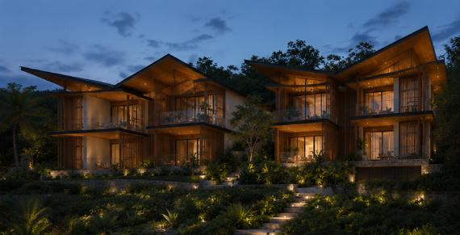
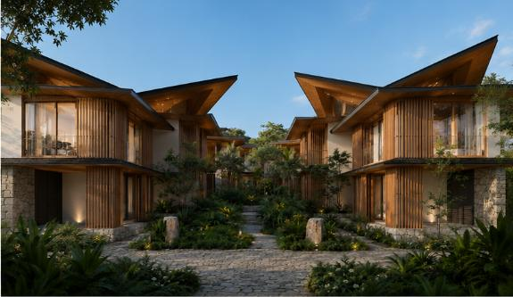
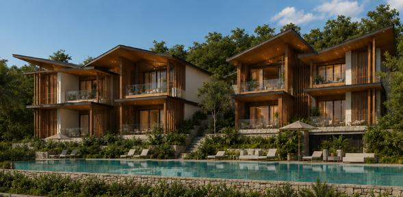
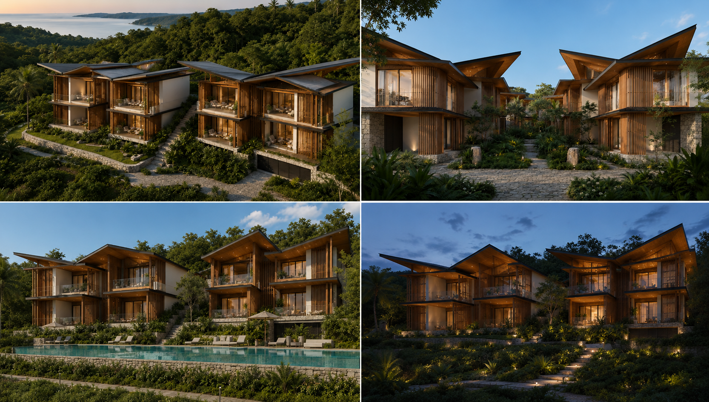

01
Hillside Variant — Aerial Dusk
Primary reference for condos on terraced hillside sites with bay views
Variant A — Hillside Terraced
Units step down the slope on stone retaining terraces. Dramatic bay and ocean views. Stone retaining walls between levels. Stepped approach paths connect units.
Variant B — Flatter Terrain Courtyard
Pairs of units face each other across a central landscaped courtyard path. No terracing. Suitable for the lower, flatter portions of the estate near the bay edge.

CTA-R01-01 · Hillside Variant · Aerial Dusk
Two-Building Hillside Cluster — Golden Hour, Savannes Bay Behind
Aerial view of two condo buildings set side by side on the terraced hillside, Savannes Bay visible on
the left horizon. Each building is two storeys with butterfly roofs, vertical timber slat screening across
both floors, and wrap-around upper balconies. Stone retaining walls step the ground between the two
buildings. Path and steps between. Both units face the bay. Lush tropical planting fills the gaps between
stone retaining walls and around the base of each building.
Critical detail — two storeys
The Condo is the only two-storey residence type at SHER. Both the ground floor and the upper floor
have their own lounge / terrace access. The upper floor wraps around as a full-width balcony with glass
or solid balustrade. The butterfly roof sits above the upper level — taller and more dramatic than the
single-storey Villa and Cottage forms.
02
Hillside Variant — Night Atmosphere
Evening reference: warm interior light against deep blue dusk sky

CTA-R01-02 · Hillside Variant · Night / Dusk
Two-Building Hillside Cluster — Deep Blue Dusk, Warm Interior Light
Same hillside cluster angle as CTA-R01-01 but at night. Deep blue-purple sky with clouds. Warm amber
interior light glows through the timber slat screens on both floors of both buildings. Uplights illuminate
the stone retaining walls and tropical planting. Central stepped path is lit. The timber screening creates
a lantern-like effect — warm light filtered rather than exposed. The butterfly roofs are clearly
silhouetted against the sky.
03
Flatter Terrain Courtyard & Pool Terrace
Variant B courtyard arrangement and the shared communal pool

CTA-R01-03 · Flatter Terrain Variant · Courtyard
Facing-Unit Courtyard Arrangement — Daytime
Two condo buildings face each other across a central planted courtyard path — the flatter terrain
deployment. Ground-level units have stepped entries; upper balconies face inward across the shared
space. The butterfly roofs are especially prominent from this close, ground-level angle — the angular
peaks of all four rooflines frame the sky. Central path is stone cobble with tropical planting either
side, stone bollards and lanterns. No terracing — all units on the same level.

CTA-R01-04 · Shared Pool Terrace · Daytime
Communal Pool — Two Buildings, Stone Retaining Wall, Sun Deck
Shared communal pool in the foreground — longer than a private pool, suitable for lap swimming,
with stone retaining wall below and pool deck level above. Two sun loungers and a parasol on the
right. Two condo buildings rise behind the pool, full facade visible: ground-floor terraces, upper
balconies with glass balustrade, timber slat screens, butterfly roofs. Lush planting between and
behind buildings. Blue sky.
Shared vs private pool
The Condo pool is communal — shared between the cluster of units. It is distinctly different from
Villa A's private terrace pool. In walkthrough imagery, the pool should read as a shared resort
amenity, not a private residence pool.
04
Overview — Four-View Composite Sheet
All four approved angles shown together for quick cross-reference

Clockwise from top-left:
(1) Hillside aerial dusk — bay behind, two buildings, stone retaining walls.
(2) Flatter terrain courtyard — butterfly roofs prominent, facing units, cobble path.
(3) Pool terrace daytime — communal pool, two buildings, sun deck.
(4) Hillside night — warm interior light filtered through timber screens against deep blue sky.
05
Condo A vs Villa A vs Cottage A — Key Distinctions
Critical for correct Estate Walkthrough imagery — each type must read as clearly different
Condo Type A
- Two storeys — the only multi-storey residence type
- Deployed in clusters of 2+ units sharing a building
- Communal shared pool — not private
- Upper balcony wraps full width, glass or solid balustrade
- Timber vertical slat screening as primary facade element
- Two butterfly roofs per building — paired peaks visible from front
- Stone retaining walls for hillside terracing between units
- Both hillside and flatter terrain deployment variants
- Bay views from upper balcony — ground floor more sheltered
Villa Type A
- Single storey — ground level only
- Individual standalone residence
- Private infinity pool on personal terrace
- Open veranda — no upper floor or balcony
- Timber slat cladding on end walls only
- One butterfly roof — two planes over a split-wing plan
- Raised on stone plinth, courtyard between wings
- Always hillside, always with bay panorama
- Full bay view from living and veranda
Cottage Type A
- Single storey — ground level only
- Individual standalone residence
- No pool — outdoor shower court instead
- Deep covered veranda, no upper floor
- Stone and lime render walls throughout
- One butterfly roof — single form over linear bar plan
- Ground-level, embedded in the landscape
- More sheltered — tucked into planting pockets
- Landscape views, bay glimpsed beyond greenery
06
Visual Intent & Rendering Rules
Applies to all Condo A imagery in the Estate Walkthrough
- Both storeys must be visible and legible in exterior renders
- Butterfly rooflines must read clearly above the upper floor
- Timber slat screening must be present and prominent on both floors
- Stone retaining walls visible in hillside variant images
- Communal pool must not be mistaken for a private villa pool
- Bay visible on horizon in hillside variant renders
- No people in primary exterior images
- Night renders: warm amber interior light filtered through timber screens
- Vegetation must be realistic and native to Saint Lucia
- No visible water tanks, pumps or service infrastructure
- Upper balcony glazing must read as open — not dark reflective glass
- Courtyard variant: central path and planting must be well-composed, not sparse